2019“电协杯”礼物设计大赛圆满落幕
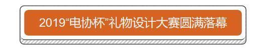
本次礼物大赛共有12支队伍晋级决赛，最终有六支队伍获奖。
每支队伍的参赛作品都别具一格，他们为了作品呈现出最好的效果都付出了很多努力。从LED灯珠的焊接到走线设计无不需要无数个日日夜夜来完成。
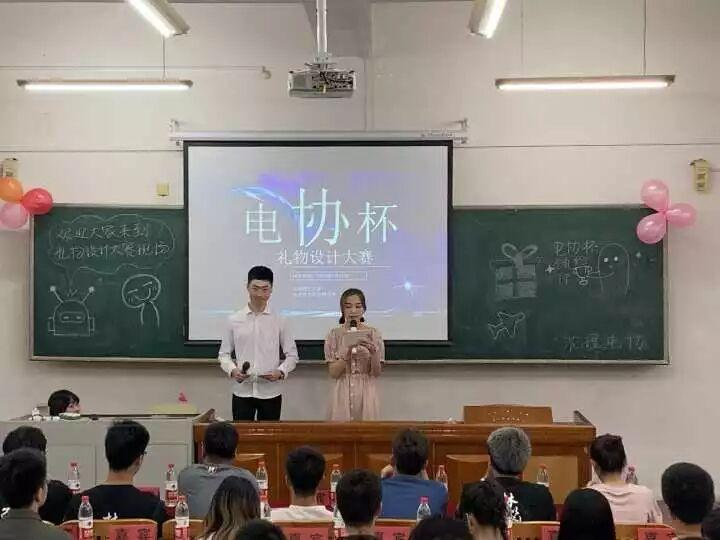
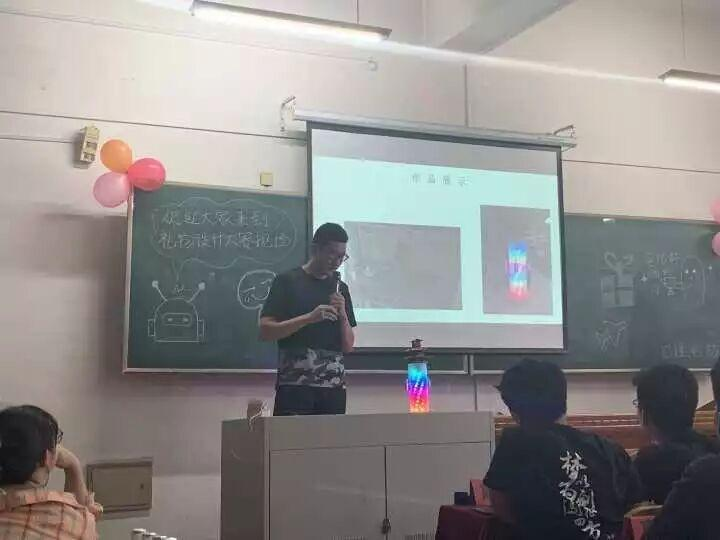
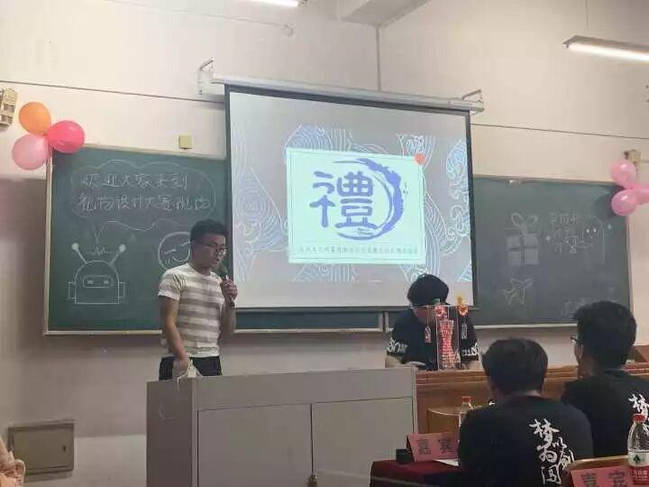
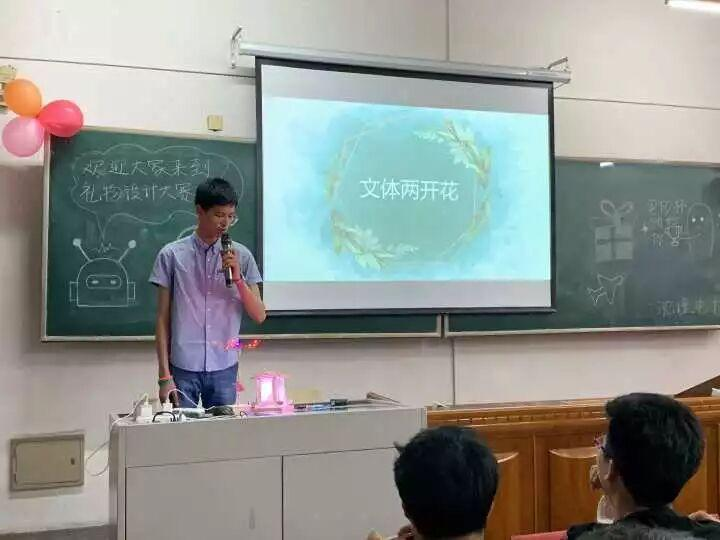
获奖队伍及队长
获奖队伍及队长 | ||
一等奖 | Vincent | 王耀 |
二等奖 | 蓝霸夫 | 孙广辛 |
该做些什么好呢 | 车家俊 | |
三等奖 | 王培德 | 王培德 |
农夫山泉水溶C100 | 王颢然 | |
这就是战队 | 李学强 | |
作品展示
下面请欣赏各支获奖队伍的作品
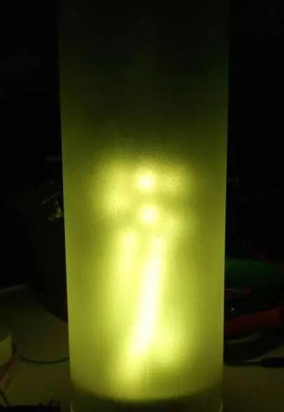
Vincent
音乐呼吸灯
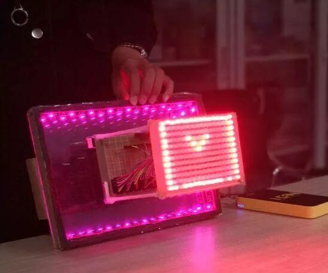
洞源
蓝霸夫
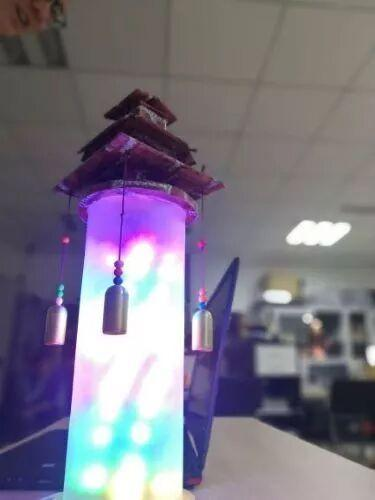
该做些什么好呢
智能LED灯
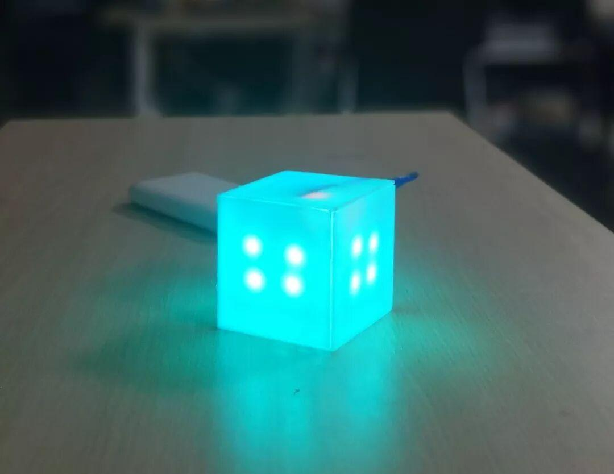
魔幻立方
王培德
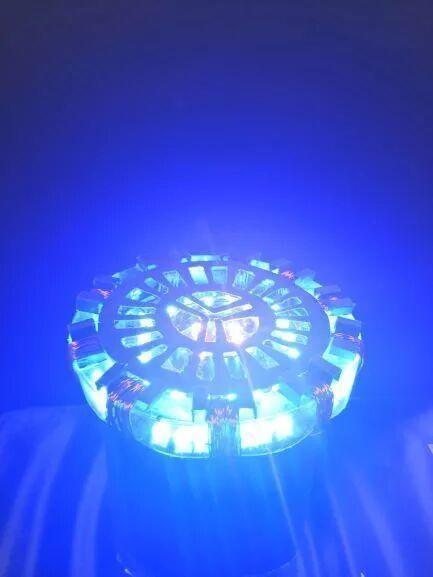
农夫山泉水溶C100
方舟反应炉
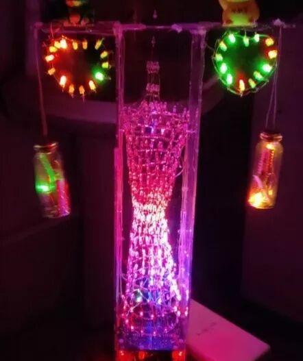
广州塔
这就是战队
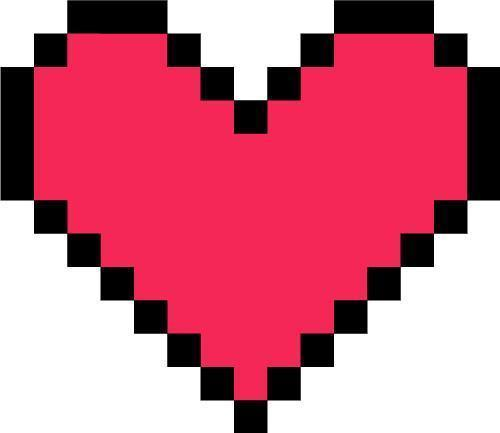

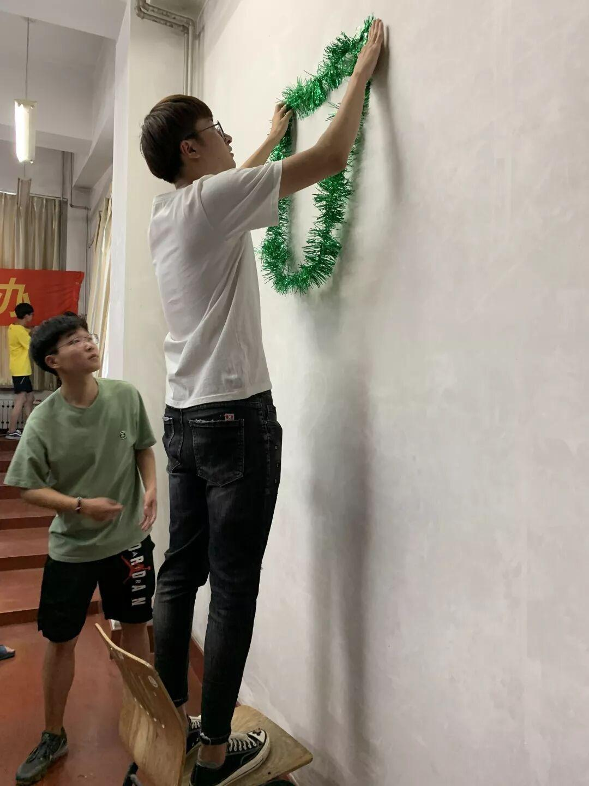
最后，我们要感谢场地布置人员，策划人员，引导员等幕后工作者的辛勤付出，是你们的尽心尽力使比赛圆满就结束！


图片：电协信息部
文字： 王颢然
排版： 王颢然